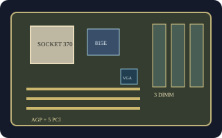

[ INDIVIDUAL COMPONENT // MOTHERBOARDS ]
Intel Desktop Board D815EEA2
Intel's Socket 370 ATX board for Pentium III/Celeron processors, built around the 815E chipset. The suffix “2” is part of the exact model and distinguishes this board from D815EEA.

Exact identity and revision: Intel Desktop Board D815EEA2; family Product Guide A52560-002. Standard BIOS family EA81520A.86A. PCB revision/AA number is printed on each board; identify the specimen before selecting firmware or CPU support.
Specifications
| CPU / socket / chipset | Socket 370 Intel Pentium III and Celeron processors listed for the board/BIOS; Intel 815E with integrated graphics and ICH2. |
|---|---|
| Form factor / case | ATX, approximately 11.55 x 8.2 in.; use an ATX chassis with matching standoffs, expansion clearance, and I/O shield. |
| Memory | Three 168-pin SDRAM DIMM sockets, PC100/PC133, up to 512 MB supported. |
| Expansion | One AGP slot and five PCI slots. |
| Storage | Two IDE channels supporting ATA/100 and one floppy connector. |
| Rear I/O | VGA, PS/2 keyboard/mouse, serial, parallel, USB 1.1, and audio; LAN is an assembly option, not universal. |
| BIOS / PSU | Intel BIOS family EA81520A.86A for the documented product set; verify D815EEA2 AA and BIOS ID. 20-pin ATX power input; inspect PSU wiring and voltage rails before use. |
Compatibility and revision notes
This 815E model provides onboard graphics; the related D815EPEA2 uses 815EP and has no integrated video. Do not flash across those models. Use only 168-pin SDRAM supported by the memory table; match processor stepping and minimum BIOS to the board's AA marking. Case fit also depends on standoffs and the rear-I/O shield.
Sources & further reading
- Intel Desktop Boards D815EEA2/D815EPEA2/D815EFV/D815EPFV Product Guide A52560-002 (archived scan)Intel-authored combined guide; model-specific layouts and setup are distinguished inside the guide.
- Intel D815EEA2 Technical Product Specification (archived copy)Technical specification for the EEA2 board and its BIOS, connectors, and limits.